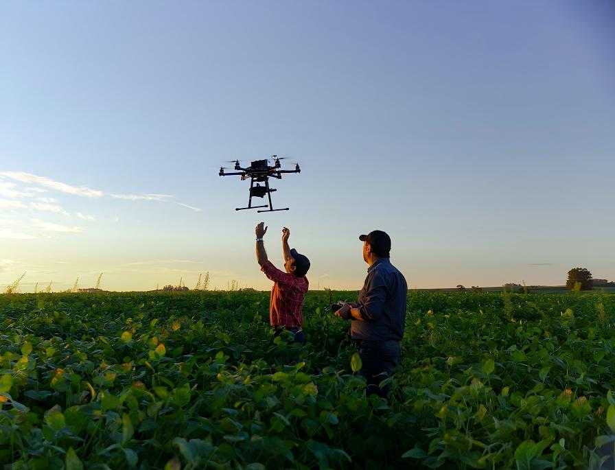
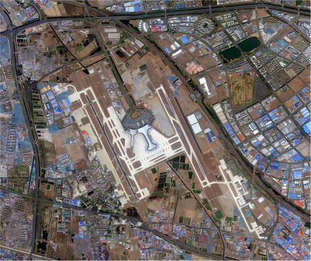

研究领域概览
本方向主要研究如何利用计算机视觉技术解析农业光学数据。
我们综合利用无人机低空遥感、高光谱/多光谱成像以及卫星遥感影像，挖掘作物生长背后的“光谱密码”，实现从单株表型到区域尺度的精准监测。

Research Focus 01
无人机多光谱与高光谱成像
超越人眼的视觉感知。利用无人机搭载的高精度光谱传感器，获取作物冠层的光谱反射率，通过深度学习模型反演作物的生理生化参数。
图谱协同反演
融合空间纹理与光谱特征，精准反演叶绿素、氮含量及水分胁迫指数。
高通量表型分析
在育种试验田通过无人机快速获取成百上千个小区的株高、覆盖度等表型数据。
早期病害光谱监测
利用高光谱“指纹”效应，在肉眼可见病斑出现前，提前发现作物病变。
Research Focus 02
卫星遥感与空天地一体化
将计算机视觉算法应用于大尺度的卫星遥感影像（如 Sentinel-2, Landsat）。研究多源异构数据的融合方法，解决卫星重访周期长、云层遮挡等问题。
大尺度作物分类
基于时序遥感影像与深度学习，实现全省/全县范围内的主要农作物种植结构提取。
空-天-地数据融合
利用无人机高分影像作为“真值”，校正卫星数据，提升区域估产的精度。
农业灾害遥感评估
针对洪涝、干旱及倒伏灾害，快速解译受灾范围与程度，服务农业保险定损。
